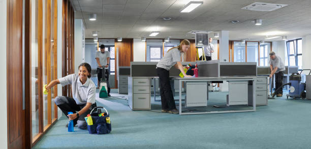
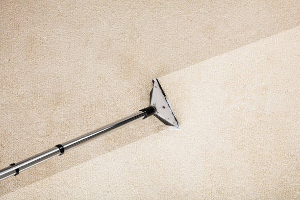

Charlotte North Carolina
info@usacarpetcleaning.pro
Charlotte North Carolina
info@usacarpetcleaning.pro

Choose the best carpet cleaning in Charlotte North Carolina ! Our skilled team removes dirt, stains, and allergens using safe methods. Transform your carpets into spotless, like-new condition!
Click Here To Call Us (877) 848-1711Maintaining clean and inviting parks is essential for fostering vibrant communities in Charlotte North Carolina . Our Park Cleaning Services company specializes in delivering comprehensive, eco-friendly solutions tailored to the unique needs of your public spaces. With years of experience and a commitment to environmental stewardship, we ensure that parks in Charlotte North Carolina remain pristine, safe, and enjoyable for all.
Our team of skilled professionals utilizes state-of-the-art equipment and sustainable cleaning methods to tackle a wide range of maintenance tasks. From litter removal and pathway cleaning to graffiti removal and restroom sanitation, we cover every aspect of park care. We understand the importance of preserving the natural beauty of your parks while ensuring they are free from hazards and pollutants.
In addition to routine cleaning, we offer customized maintenance plans designed to address the specific challenges of parks in Charlotte North Carolina . Whether it's seasonal upkeep or addressing high-traffic areas, our services are flexible and scalable to meet your needs. We take pride in our attention to detail and our ability to enhance the overall aesthetic and safety of your public spaces.
By choosing our Park Cleaning Services in Charlotte North Carolina you're investing in the well-being of your community. Clean parks contribute to better health, increased outdoor activity, and a stronger sense of community pride. Let us help you create a cleaner, greener, and more welcoming environment in Charlotte North Carolina today.
Residential & commercial Carpet Cleaning
Quality services at affordable prices
Immediate 24/ 7 emergency services


Are you looking for reliable carpet cleaning services for your home or business in Charlotte North Carolina ? Our team of professionals is here to restore the cleanliness and beauty of your carpets, ensuring a fresh, healthy environment for your family, employees, and customers. We specialize in comprehensive carpet cleaning solutions that use eco-friendly products and state-of-the-art equipment to tackle dirt, stains, and allergens effectively.
At Carpet Cleaning, we understand that carpets are a significant investment, which is why we offer specialized services to preserve their appearance and extend their lifespan. Whether you need residential carpet cleaning for your home or commercial carpet cleaning for your business, we are equipped to handle all types of carpet fabrics and sizes.
Our expert team utilizes advanced techniques such as hot water extraction, steam cleaning, and deep carpet shampooing to remove even the toughest stains and embedded dirt. We also offer specialized treatments for pet stains, odor removal, and allergy relief, providing your home or business with a healthier atmosphere.
Choose Carpet Cleaning for professional, fast, and affordable carpet cleaning services in Charlotte North Carolina . We are committed to delivering superior results that exceed your expectations. Call today for a free estimate and see why we're the best choice for carpet cleaning in Charlotte North Carolina .
Residential & commercial Carpet Cleaning
Quality services at affordable prices
Immediate 24/ 7 emergency services
Carpet care in schools and daycare facilities is essential for creating a safe and healthy learning environment. At Carpet Cleaning, we specialize in school and daycare carpet maintenance services employing age-appropriate cleaning solutions that protect the health of children while ensuring cleanliness.
Our cleaning approach incorporates regular cleaning schedules, deep cleaning treatments, and allergen removal to ensure that carpets remain free from dirt, stains, and harmful allergens. We understand the importance of maintaining a sanitary space that supports the well-being of students and staff alike.
When you opt for Carpet Cleaning, you gain a partner in maintaining a clean and healthy educational environment. Our experience, dedication, and commitment to quality service set us apart as the premier carpet cleaning service for schools and daycare centers.

Ensure the longevity of your carpets with our Carpet Protection Treatments, including Scotchgard in Charlotte North Carolina . These treatments provide a protective barrier against spills, stains, and dirt that can damage your carpets over time. Our knowledgeable technicians apply these treatments professionally to ensure maximum effectiveness. With Scotchgard, you can enjoy peace of mind, knowing that your carpets are safeguarded against everyday mishaps. Choose our services to extend the life of your carpets and maintain their appearance, giving you a beautiful, worry-free space.

Mold and mildew can pose serious health risks, particularly in damp areas where carpets are located. At Carpet Cleaning, we offer specialized carpet mold and mildew removal services . Our expert team is skilled in identifying mold growth and applying targeted treatments to eliminate it completely. We utilize safe and effective methods that restore your carpets while preventing future growth. If you suspect mold or mildew in your space, it’s crucial to act quickly. Choose us for thorough mold removal and a healthier indoor environment.

If you require a quick and effective carpet cleaning solution, our carpet dry cleaning services are an excellent option. At Carpet Cleaning, we offer dry cleaning services in Charlotte North Carolina that involve minimal wetness and rapid drying times, ideal for residences and businesses that cannot afford downtime.
Our dry cleaning method uses specialized solvents and techniques to dissolve dirt and stains without soaking your carpets in water. We take care to ensure that no residue is left behind, and many carpets can be walked on shortly after the service is completed.
Choosing Carpet Cleaning means that you will receive exceptional service with fast results. Our team is dedicated to providing you with a cleaner, fresher carpet without the need for long drying times. Experience the convenience and effectiveness of our dry cleaning services .

Water damage can wreak havoc on your carpets, but our Carpet Water Damage Restoration Services in Charlotte North Carolina are here to help. We understand the urgency of addressing water damage to prevent mold growth and extended damage. Our trained professionals respond quickly, using advanced extraction and drying techniques to restore your carpets effectively. We assess the damage and determine the best course of action to revive your carpets to their pre-damage state. Choose us for timely and efficient water damage solutions that protect your home and investment.
Oriental and area rugs require special care, and our Oriental and Area Rug Cleaning Services are specifically designed to treat these valuable items with the respect they deserve. Our expert technicians are trained in the delicate cleaning processes necessary to preserve the color, texture, and integrity of your rugs. We use gentle, effective methods tailored to the unique materials and designs present in your rugs, ensuring a thorough clean that enhances their beauty. Trust us to restore your treasured rugs and keep them looking stunning for years to come.

High-end homes deserve the finest in carpet care. At Carpet Cleaning, we offer luxury carpet cleaning services that cater to discerning homeowners looking to maintain their elegant residences. Our expert team is trained in the most effective techniques for cleaning fine carpets, including bespoke services for specialty and antique carpets. We use premium products that are safe and effective, ensuring your carpets are treated with the care they deserve. From stain removal to restoration, we approach every task with precision and excellence. Choose us for unparalleled carpet care in your high-end home.

Transitioning between homes can be stressful, but clean carpets can ease that process. At Carpet Cleaning, we provide move-in/move-out carpet cleaning services that ensure your carpets are impeccable, whether you are leaving a property or preparing to move in. Our thorough cleaning process addresses all aspects, from deep cleaning to spot treatment, ensuring a welcoming environment for new occupants. We understand the importance of securing your rental deposit, which is why our move-out cleaning services are designed to meet stringent landlord standards. Choose us for efficient and reliable move-in/move-out carpet cleaning that helps you start fresh in your new home.
Years Experience
Expert Technicians
Satisfied Clients
Compleate Projects
At USA Carpet Cleaning, we are committed to providing top-quality carpet cleaning services across Charlotte North Carolina . Our team of highly trained professionals uses advanced cleaning techniques and eco-friendly products to ensure your carpets not only look great but are also safe for your family and pets. We specialize in deep cleaning that removes dirt, allergens, and stains, leaving your home or office refreshed and inviting.
What sets us apart from other carpet cleaning services in Charlotte North Carolina is our dedication to customer satisfaction. We understand that your carpets are an investment, and we treat them with the utmost care. Our team is equipped with state-of-the-art equipment to deliver superior results every time. Whether you're dealing with tough stains, pet odors, or everyday dirt, we have the expertise to tackle it all.
With years of experience serving homeowners and businesses across Charlotte North Carolina USA Carpet Cleaning has built a reputation for reliability, professionalism, and attention to detail. We offer flexible scheduling, ensuring minimal disruption to your daily routine, and our services are affordable without compromising quality.
When you choose USA Carpet Cleaning, you’re choosing a company that values cleanliness, health, and customer care. Our goal is to restore the beauty of your carpets while providing a healthier living environment. Contact us today for a free quote and experience the difference that expert carpet cleaning can make in your home or business.
In today's world, maintaining a clean and healthy environment is crucial for both homes and businesses. Deep carpet cleaning services are more than just a luxury; they are essential for prolonging the life of your carpets and improving indoor air quality. At Carpet Cleaning, we specialize in deep carpet cleaning that targets the root causes of dirt, allergens, and bacteria. Our expert team utilizes advanced equipment and eco-friendly cleaning solutions tailored to meet the needs of our clients . Whether you're dealing with stubborn stains or just want to refresh your living space, our deep cleaning service guarantees noticeable results. Why choose us? Our trained professionals are dedicated to providing exceptional customer service, and we use the latest technology to ensure your carpets are left looking and feeling like new.
In today's environmentally conscious society, choosing an eco-friendly carpet cleaning solution has become a priority for many homeowners and businesses. Carpet Cleaning proudly offers eco-friendly carpet cleaning services that utilize non-toxic, biodegradable cleaning products. Our methods not only steer clear of harsh chemicals but also ensure your home or office remains safe for children and pets.
We understand that environmental impact matters. Our eco-friendly cleaning approach efficiently removes dirt and stains while preserving indoor air quality and safeguarding your family’s health. Our specialized green cleaning solutions break down organic matter and eliminate allergens effectively—leaving your carpets fresh and clean without the chemical residue.
When you choose Carpet Cleaning for your carpet cleaning needs you are choosing sustainability without sacrificing cleanliness or performance. Our team is passionate about both great results and great care for our planet. Join us in making a responsible choice for your carpets and the environment.
Pets are wonderful companions, but they can sometimes create messes that are difficult to clean up. If you’re struggling with pet stains and odors, you need a reliable solution. Our pet stain and odor removal service is designed specifically for pet owners. We understand that conventional cleaning methods often fall short against tough stains and lingering smells. Our advanced cleaning techniques are tailored to break down waste particles and neutralize odors at their source, ensuring your home remains fresh and inviting. We take great care to use pet-friendly products that are safe for your furry friends. Trust Carpet Cleaning for effective and compassionate pet stain removal services that restore your carpets without harmful chemicals.
Experience the power of heat with our Carpet Steam Cleaning Services . Steam cleaning is one of the most effective ways to eliminate dirt, dust mites, and bacteria lodged deep within your carpets. Our method uses high-temperature steam to sanitize and rejuvenate your carpets, returning them to their original glory. It’s not just about aesthetics; it's about health. Our skilled technicians thoroughly inspect your carpets before applying our steam cleaning method, ensuring a tailor-made approach for your specific needs. By choosing us, you're investing in a healthier home environment that looks and smells fresh.
Just like your hair, carpets can benefit from a deep cleansing treatment. Our carpet shampooing services involve the use of specialized shampooing formulas that penetrate carpet fibers, lifting dirt and stains effectively. At Carpet Cleaning, our shampooing process is thorough, ensuring that no residue is left behind, which can attract more dirt. Our team is dedicated to restoring the beauty of your carpets, and our commitment to quality means you can trust us for results that last. Why should you choose us? We have years of experience and a reputation for excellence in the carpet cleaning industry, making us the best choice for your carpet shampooing services.
Allergens such as dust mites, pet dander, and pollen can accumulate in your carpets and contribute to respiratory issues and allergies. At Carpet Cleaning, we offer allergen removal services that are essential for families with allergies or asthma. Our professional team uses advanced cleaning techniques and hypoallergenic products to effectively remove these allergens from your carpets. By choosing our allergen removal service you’re not only investing in the cleanliness of your carpets but also in the health of your family. Our commitment to quality and customer satisfaction makes us the perfect partner in creating a healthier home environment.
Every home and business experiences unexpected spills and stains. At Carpet Cleaning, we understand that prompt and effective spot and stain treatment can prevent lasting damage and unsightly blemishes on your carpets. Our expert team is well-versed in identifying and treating various types of stains, from wine and coffee to grease and ink.
Our spot and stain treatment process employs advanced cleaning techniques and specialized solutions that are safe for your carpets yet tough on stains. We conduct a pre-treatment analysis to determine the best course of action for each specific stain, ensuring a tailored approach that delivers optimal results. We then apply the appropriate cleaning solution, agitate the area gently, and extract the stain effectively.
With Carpet Cleaning, you can rest assured that your carpets will look their best again. Our commitment to detail and customer satisfaction makes us the leading choice for spot and stain treatment —put your carpet worries in our hands.
Wall-to-wall carpets provide warmth and aesthetic appeal to any space. However, they also require regular maintenance to keep them looking fresh and clean. At Carpet Cleaning, we provide comprehensive wall-to-wall carpet cleaning services for residents and businesses in Charlotte North Carolina .
Our thorough cleaning process begins with a meticulous assessment of your carpets, followed by pre-treatment of spots and stains. We utilize hot water extraction methods to penetrate deep into the carpet fibers, lifting out dirt and allergens trapped within. Then, high-powered suction ensures that your carpets will be left clean, dry, and ready for immediate use.
When you choose Carpet Cleaning for wall-to-wall carpet cleaning, you are making a choice towards cleanliness, health, and comfort. Our trained professionals prioritize your needs, ensuring that we exceed your expectations while providing exceptional service in Charlotte North Carolina . With our expertise, your carpets will regain their vibrancy and life.
Living in an apartment often means smaller spaces but does not mean compromising on cleanliness. At Carpet Cleaning, we specialize in apartment carpet cleaning services designed to cater to the unique challenges presented by urban living . Our team understands the nuances of cleaning in limited spaces and is equipped to handle every job with precision and care.
Our apartment carpet cleaning services include thorough inspections, tailored cleaning solutions, and efficient execution of the cleaning process, all while respecting your schedule and living environment. We utilize advanced equipment and eco-friendly cleaners to ensure that your carpets receive a deep clean without any inconvenience to you or your neighbors.
When you choose Carpet Cleaning for your apartment carpet cleaning needs, you are selecting a service that values quality, professionalism, and satisfaction. Our goal is to provide carpets that not only look good but also contribute to a healthier living environment for you in Charlotte North Carolina .
High-traffic areas in your home or business can quickly show wear and tear. Our high-traffic area carpet restoration service is designed to rejuvenate carpets that have seen better days. We specialize in techniques that target heavy soils and traffic patterns, ensuring that your carpets look their best no matter how busy your space gets. Our restoration process includes thorough cleaning and, if necessary, repair services that can extend the life of your carpets significantly. Trust Carpet Cleaning for expert care in high-traffic zones, as we understand that maintaining appearance is essential for both aesthetics and property value.
A clean office promotes a productive work environment, and at Carpet Cleaning, we provide comprehensive office carpet cleaning services in Charlotte North Carolina . We understand that an office's carpets are high-traffic areas, trapping dirt, allergens, and bacteria. Our professional cleaning approach not only enhances the appearance of your office but also contributes to a healthier workplace. We offer flexible scheduling around your office hours, minimizing disruption to your daily operations. Our commitment to using eco-friendly products ensures a safe environment for both your employees and clients. Choose us for your office carpet cleaning needs and see the remarkable difference in cleanliness and professionalism.
In the hospitality industry, the cleanliness of carpets can significantly influence guest perception and satisfaction. At Carpet Cleaning, we provide specialized carpet cleaning services for hotels and hospitality venues ensuring that your establishment always looks its best.
Our experienced team understands the unique challenges presented by hotel environments, such as keeping carpets clean and fresh during high turnover periods. Our services include thorough cleaning of guest rooms, hallways, event spaces, and restaurants using methods that are both effective and gentle on carpets. We employ advanced equipment and environmentally friendly cleaning solutions suitable for high-traffic areas.
When you choose Carpet Cleaning for carpet cleaning at your hospitality venue, you can be confident in our ability to consistently deliver the highest standard of cleanliness. We are dedicated to helping you create a welcoming atmosphere for your guests, solidifying your reputation as a top-tier accommodation provider .
In retail environments, clean and inviting spaces can drive customer satisfaction and sales. Our retail store carpet maintenance service is crafted to provide ongoing care for high-traffic retail spaces. We understand that spills and stains can happen at any time, and our rapid response team is always ready to address issues promptly. Our maintenance solutions include regular cleaning schedules tailored to your business needs, ensuring that your carpets always look pristine. By choosing Carpet Cleaning, you ensure a welcoming atmosphere for your customers and a professional appearance for your brand.
Restaurants face unique challenges when it comes to maintaining cleanliness, especially in high-traffic carpeted areas. At Carpet Cleaning, we specialize in restaurant carpet cleaning services in Charlotte North Carolina ensuring that your dining environment remains clean, inviting, and free from unpleasant odors.
Our cleaning process is efficient and thorough, addressing spots, stains, and deep-down dirt effectively. We understand the need for quick turnaround times in the restaurant industry, and our professional team will work diligently to ensure your carpets are cleaned with minimal disruption to your service. We also use high-quality, food-safe cleaning products that are safe for your patrons while effectively removing grease, food residues, and stains.
When you partner with Carpet Cleaning for your restaurant carpet cleaning needs, you can trust that we will maintain the high standards necessary to ensure a welcoming atmosphere for your guests . Our commitment to excellence and customer satisfaction sets us apart in the industry.
Industrial environments present unique challenges for carpet maintenance. Our Industrial Carpet Cleaning Solutions are tailored to effectively manage the tough conditions of warehouses, factories, and other industrial spaces. We use heavy-duty equipment and specialized cleaning agents that can tackle the rigorous demands of these environments, ensuring your carpets remain clean, safe, and functional. We understand the specific needs of industrial settings and work diligently to provide an efficient service that keeps your carpets in top condition. Trust us for durable and dependable cleaning solutions.
Event venues host countless gatherings, and the cleanliness of your carpets can significantly impact the visitor experience. Our Event Venue Carpet Cleaning Services are designed with the demands of high-traffic events in mind. We offer thorough cleaning before and after events, ensuring your carpets are pristine for every occasion. Our team is experienced in handling various types of events, from weddings to corporate functions, and we understand the importance of making a great impression. Choose us for reliable service and exceptional results that enhance your venue’s appeal.
Clean carpets in healthcare facilities are paramount to maintaining a safe and hygienic environment. At Carpet Cleaning, we provide specialized healthcare facility carpet cleaning services ensuring that your facility remains compliant with health and safety standards.
Our methods are designed to eliminate dust, allergens, and microbes that can pose a risk to patients and staff alike. We employ EPA-approved cleaning products and high-efficiency particulate air (HEPA) filtration systems to thoroughly clean carpets while reducing chemical exposure. Our team is trained in handling the unique challenges of cleaning carpets in medical offices, hospitals, and clinics.
By choosing Carpet Cleaning for your healthcare carpet cleaning needs, you are ensuring a clean, safe, and welcoming environment for all. Our attention to detail and commitment to excellence in Charlotte North Carolina makes us the best choice for healthcare facilities.
Looking for affordable and reliable carpet cleaning services in Charlotte North Carolina ? Look no further! Our carpet cleaning packages are designed to provide high-quality cleaning at a price that suits your budget. Whether you're dealing with stubborn stains, odors, or general wear and tear, our professional team uses state-of-the-art equipment and eco-friendly cleaning solutions to restore your carpets to their former glory.
We understand the importance of maintaining a clean and healthy home or office environment, and our affordable carpet cleaning packages are perfect for both residential and commercial spaces in Charlotte North Carolina . Our team is trained to handle all types of carpet fibers, ensuring a deep clean that is both safe and effective.
Our packages include a comprehensive cleaning service, removing dirt, allergens, and bacteria that can accumulate over time. Plus, our flexible scheduling ensures that we can clean your carpets at a time that works best for you, with minimal disruption to your daily routine.
Whether you need one-time cleaning or ongoing maintenance, our affordable carpet cleaning packages in Charlotte North Carolina are tailored to meet your specific needs. Don’t let dirty carpets bring down the look and feel of your space—contact us today to learn more about our packages and schedule your cleaning.
Charlotte (/ˈʃɑːrlət/ SHAHR-luht) is the most populous city in the U.S. state of North Carolina. Located in the Piedmont region, it is the county seat of Mecklenburg County. The population was 874,579 at the 2020 census, making Charlotte the 15th-most populous city in the U.S., the seventh-most populous city in the South, and the second-most populous city in the Southeast behind Jacksonville, Florida. The city is the cultural, economic, and transportation center of the Charlotte metropolitan area, whose 2020 population of 2,660,329 ranked 22nd in the U.S. Metrolina is part of a sixteen-county market region or combined statistical area with a 2020 census-estimated population of 2,846,550.
Absolutely! We use eco-friendly and non-toxic cleaning solutions in Charlotte North Carolina to ensure the safety of your kids and pets.
Professional carpet cleaning removes deep-seated dirt, allergens, and stains, leaving your carpets fresher, healthier, and extending their lifespan.
On average, carpets cleaned take 4-6 hours to dry, but this can vary based on ventilation and humidity.
Our advanced carpet cleaning techniques can address minor mold issues, but severe cases may require additional treatment.
Yes, we provide upholstery cleaning services to complement our carpet cleaning offerings.
Simply move small furniture items and clear the area of fragile objects before our carpet cleaning team arrives .
Yes, our professional carpet cleaning services in Charlotte North Carolina specialize in removing tough stains like wine, coffee, and pet accidents using advanced techniques.
Yes, our carpet cleaning services effectively remove dust mites, pollen, and other allergens, improving indoor air quality.
Yes, we offer commercial carpet cleaning services in Charlotte North Carolina for offices, restaurants, and retail spaces.
Yes, we offer specialized rug cleaning services including oriental and area rugs.
Yes, we apply protective treatments to help resist stains and prolong carpet life.
Yes, we prioritize the use of eco-friendly, biodegradable cleaning products .
Yes, we provide emergency carpet cleaning in Charlotte North Carolina to address unexpected spills and accidents.
Yes, we occasionally offer discounts and promotions on carpet cleaning services in Charlotte North Carolina . Check our website for updates.
It’s recommended to have your carpets professionally cleaned every 6-12 months, depending on foot traffic and the presence of pets or children in your Charlotte North Carolina home.
It’s best to wait until your carpets dry fully but we recommend using clean socks if necessary.
Carpet cleaning costs in Charlotte North Carolina vary based on the size of the area and the condition of the carpets. Contact us for a free quote.
Yes, we provide same-day carpet cleaning for your convenience, depending on availability.
Yes, our professional carpet cleaning services in Charlotte North Carolina include deodorization to eliminate unpleasant odors.
No, we provide upfront pricing for all carpet cleaning services with no hidden fees.
Absolutely! Our carpet cleaning professionals are highly trained and certified.
Our commitment to quality, eco-friendly solutions, and exceptional customer service set us apart in Charlotte North Carolina .
Booking is easy! Call us or schedule online for professional carpet cleaning .
We use pre-treatment solutions and deep-cleaning techniques to effectively clean heavily soiled carpets .
Most carpet cleaning jobs in Charlotte North Carolina are completed within 1-2 hours, depending on the size and condition of the area.
We clean all types of carpets including wool, synthetic, Berber, and plush.
Steam cleaning is highly effective for deep cleaning carpets while dry cleaning is better for quick results.
We guarantee customer satisfaction for our carpet cleaning services . If you’re not happy, we’ll make it right.
Yes, our professional carpet cleaning process in Charlotte North Carolina kills bacteria and germs for a healthier home.
Yes, we offer water extraction and carpet restoration services in Charlotte North Carolina for water-damaged areas.
I’m thoroughly impressed with USA Carpet Cleaning in Charlotte North Carolina . They removed tough stains from my carpet and left everything smelling fresh. Their service was quick and efficient, and the price was very reasonable. I will be using them again!
Profession
USA Carpet Cleaning was fantastic! I called them to clean my carpets in Charlotte North Carolina and they did an outstanding job. They were friendly, efficient, and affordable. My carpets haven’t looked this good in years. Highly recommend them!
Profession
USA Carpet Cleaning in Charlotte North Carolina made my carpets look brand new again! They were quick, friendly, and got rid of all the stains. I’m so happy with the service and will definitely call them for my next cleaning. Great experience all around!
Profession
Charlotte NC Carpet Cleaning Pros
(877) 848-1711
info@usacarpetcleaning.pro
09.00 AM - 09.00 PM
09.00 AM - 12.00 PM